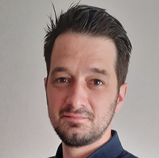
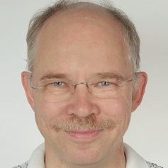
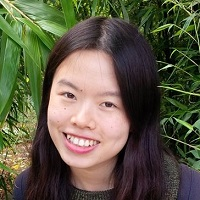
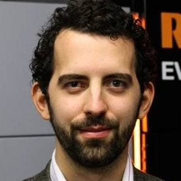
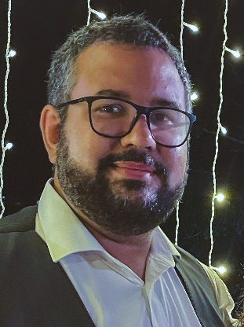
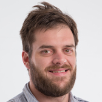
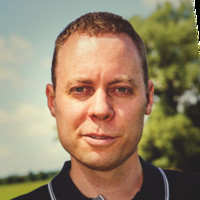
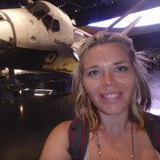
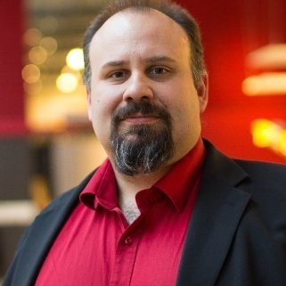

Organized by
Capella Days 2021 is organized by Obeo, in partnership with Thales.
Capella Days regularly brings together the community of Capella and Arcadia:
Capella Days is your opportunity to learn from Capella ecosystem members! Benefit from the experience of industrial adopters who have sucessfully deployed an MBSE approach with Arcadia and Capella on their projects.
Capella Days 2021 is organized by Obeo, in partnership with Thales.
Capella Days 2021 is sponsored by vibrant members of the Capella ecosystem:
You are a provider of services or products related to Capella?
Support the event and gain visibility from the Capella practitioners by sponsoring Capella Days.
| Time | Session | Speakers |
|---|---|---|
| 3:30 pm CET | Welcome and Introduction | |
| 3:35 pm CET | How I pack my suitcase | Susan Faust (Siemens) Chantal Sinnwell (Siemens) |
| 4:15 pm CET | Capella Warmup - Introduction to CAPELLA/ARCADIA and NASA Systems Engineering Handbook: Modeling overview with the HUBBLE Space Telescope | Rémy Drouin |
| 6:05 pm CET | Closing |
| Time | Session | Speakers |
|---|---|---|
| 4:00 pm CET | Welcome and Introduction | |
| 4:05 pm CET | The long way from Bid to project... supported by Capella | Michael Schaeffer (Thales Germany) |
| 4:45 pm CET | A STEP towards Model-based: Case Study covering Conceptual Design of a Fusion Power Plant | Yitong Chen (UK Atomic Energy Authority) Jason Joannou (UK Atomic Energy Authority) |
| 5:25 pm CET | Using MBSE to integrate engineering undergraduate courses curriculum | Prof. Dr. Christopher Shneider Cerqueira (Instituto Tecnológico de Aeronáutica) Prof. Dr. Eduardo Escobar Bürger (Universidade Federal de Santa Maria) |
| 6:05 pm CET | Closing |
| Time | Session | Speakers |
|---|---|---|
| 4:00 pm CET | Welcome and Introduction | |
| 4:05 pm CET | Exploring the various roles of MBSE in the digital thread | Dr Jonnro Erasmus (ASML) |
| 4:45 pm CET | Enhancing CubeSat design through ARCADIA and Capella: a concrete application | Paolo Minacapilli (Politecnico di Milano) |
| 5:25 pm CET | Where to start with MBSE when thousands of system requirements are already defined | Peter Havenga (Thales Australia) Laura Mallon (Thales Australia) |
| 6:05 pm CET | Closing |
| Time | Session | Speakers |
|---|---|---|
| 4:00 pm CET | Welcome and Introduction | |
| 4:05 pm CET | An example of model-centric engineering environment with Capella and CI/CD | Viktor Kravchenko (DB Netz AG) |
| 4:45 pm CET | Using MBSE and Capella to improve regulatory certification | John Andersson (Stille AB) |
| 5:25 pm CET | How much time does modeling take? Experiences from modeling without experience | Evelyn Honoré-Livermore (The Norwegian University of Science and Technology) |
| 6:05 pm CET | Closing |
MONDAY 15th of NOVEMBER | 3:35 pm CET
Model-based systems engineering is everywhere - everyone talks about it, everyone wants to use it, but what is actually behind it? This question will be outlined by means of a playful approach and a real problem: "I pack my suitcase and take with me...".
Based on this problem, we will successively use the game to pack the suitcase with the help of SE and finally MBSE and present it by means of a small demonstration. Let's go together on the hopefully soon journey and pack our suitcase.
 |
Susan Faust (Siemens Digital Industry Software)As a passionate ALM enthusiast, Susan Faust has been working as a PreSales Solution Consultant for the Polarion division at Siemens Digital Industry Software since 2019, advising and supporting companies on the topics related to software and system development. |
 |
Chantal Sinnwell (Siemens Digital Industry Software)As a mechanical engineer with a PhD, Dr. Chantal Sinnwell has been working as a Solution Architect for the MBSE topic area at Siemens Digital Industry Software since 2019 and advises companies on the topics of MBSE and Model-based Production Engineering. She previously completed her doctorate on the question of how MBSE can be applied to production planning. |
MONDAY 15th of NOVEMBER | 4:05 pm CET
The NASA System Engineering (SE) handbook aims to provide general guidance and information on systems engineering, as it should be applied throughout NASA. The handbook introduces 3 common technical processes. One of these, is the System Design Process, describing the stakeholders expectations, requirements definition, logical decomposition and design solution definition. The 4 activities can be supported by a Model-Based Systems Engineering (MBSE) approach. To do so, an appropriate method and tool is necessary as the one provided by the ARChitecture Analysis & Design Integrated Approach.
ARCADIA, with its modeler CAPELLA, is a MBSE solution supporting system modeling activities. Based on 4 architectural layers, which are Operational Analysis, System Analysis, Logical and Physical Architecture, it is a structured architecture engineering method for defining and validating multi-domain systems.
This talk will present an educational overview of the ARCADIA methodology and System Design Process from the NASA SE, by introducing MBSE artefacts for space system.
The HUBBLE Space Telescope (HST) is a Cassegrain reflector telescope. Orbiting above the earth, HST elaborates a clear view of the universe free from the blurring and absorbing effects of the atmosphere. In order to illustrate the journey throughout CAPELLA, the HST will be introduced, as example, based on public information available.
|  |
Rémy DrouinRemy Drouin has been military as avionic systems engineer in the French Air Force then Team Leader and Program Manager in automotive and elevator industries developping connected services solutions. Nowdays, he is the head of system department at CILAS (spatial and defense domain) managing System Architects, coaching MBSE/Systems engineering, and is especially involved in the development of High Energy Laser Systems. |
TUESDAY 16th of NOVEMBER | 4:05 pm CET
In 2018 during the Capella Days I showed how Capella and ARCADIA could be successfully applied supporting the bid phase of a large railway signalling project. In the meantime, this bid-project has changed into a real-world project.
This presentation shows the long way from the bid model to the project model in Capella. Beside looking at some questions like "What can be reused form the bid model?" or "How can we quickly enlarge the number of system architects working on the project?", we will have a look at some of the pitfalls on this way.
Additionally this talk gives some answers to questions like "Which of the different views of ARCADIA are suitable for which purpose?" or "How can one model special topics like communication with customers, description of external interfaces or safety and security aspects for a large railway traffic management system".
|  |
Michael Schaeffer (Thales Germany)Michael Schaeffer is working since 1992 for Thales and the predecessor companies Alcatel and SEL as software and system architect in the following areas:
|
TUESDAY 16th of NOVEMBER | 4:45 pm CET
STEP (Spherical Tokamak for Energy Production) is a £220M project aiming to develop a conceptual design for a First of a Kind (FOAK) commercially viable Fusion Power Plant by 2024.
Designing a power plant at this scale comes with immense challenges: Systems engineering approach is relatively new to the industry, where the industry has been heavily research based and engineering processes are not fully in place. UKAEA, the organisation running the STEP project, is applying Model-Based Systems Engineering using the Capella tool.
The focus of our approach in managing the complexity of the system is to perform system analysis and logical architecture analysis, to generate engineering artefacts from the model. Through NGO (Needs, Goals, Objectives) analysis key system capabilities were realised to functional chains, which forms the basis for further refinement of the Logical Architecture. The differentiation between logical and physical architectures has ensured that the design stays at the logical space and the team focuses on defining the problem space. This approach has improved interface management process, by creating model-based interface documents, using the model as ‘single source of truth’ to achieve consistency. The architecture definition activities allowed early formalisation of the textual requirements, to drive detailed engineering design in the next phase.
Adopting Capella comes with challenges - one of which stems from the unique characteristic of the concept phase – the need to generate architectural variants and evaluating them. The framework and the language are limited in performing variant modelling, a topic UKAEA plans to investigate further. Another challenge was that middle-out approach was favoured for STEP whereas Arcadia method prefers the top-down approach.
Throughout this journey, adopting Capella with its use-friendly interfaces has allowed us to better engage with the programme in the MBSE approach and indoctrinate better SE practices.
|  |
Yitong Chen (UK Atomic Energy Authority)Yitong Chen is a Systems Engineer with UK Atomic Energy Authority. During her time at UKAEA, she has been a part of the delivery of conceptual design of STEP (Spherical Tokamak for Energy Production) and has focused on applying systems engineering approach on fuel cycle systems, and that at the power plant level, whilst also being an advocate for Model-Based Systems Engineering methods. She has been working on engineering governance stream, contributing to the overall engineering management of the program. She received her master’s degree in Chemical Engineering from Imperial College London in 2017 and is currently pursuing INCOSE ASEP quaification. She started her technical career as a design engineer at Cummins, responsible for component design and integration of components into engine systems, and validation and verification activities. |
|  |
Jason Joannou (UK Atomic Energy Authority)Jason Joannou is Group Leader for Systems Engineering at the UK Atomic Energy Authority, responsible for enabling the effective implementation of Systems Engineering across the organisation. He also leads the Model Based Systems Engineering and Information Framework workstreams in STEP, the flagship project developing a conceptual fusion power plant design and providing a platform for the realistic prospect of constructing a commercially viable power plant by 2040. A Chartered Engineer and Certified Systems Engineering Professional, Jason has had a varied career, including as Lead Engineer on a project to develop a concept design for a UK National Thermal Hydraulics Facility and as Technical Lead responsible for developing a new family of metal additive manufacturing machines. |
TUESDAY 16th of NOVEMBER | 5:25 pm CET
The use of MBSE into the undergraduate courses brings the opportunity to integrate the curriculum through an Integrated Design Model. This lecture will: (i) explain the incorporation of Capella into an Airspace Engineering Curriculum; (ii) describe the experience in each discipline, allowing to keep the context, expanding through systemic perspectives; and (iii) present some results, feedbacks and lessons learned.
The lecture will close with how the Brazilian Secretary of Education changed the Brazilian Engineering Courses Guidelines to incorporate Systems Thinking and the opportunity to use Arcadia, and Capella – being free/opensource – as a common Systems Engineering Core.
|  |
Prof. Dr. Christopher Shneider Cerqueira (Instituto Tecnológico de Aeronáutica) |
Prof. Dr. Eduardo Escobar Bürger (Universidade Federal de Santa Maria) |
WEDNESDAY 17th of NOVEMBER | 4:05 pm CET
It is generally agreed that model-based systems engineering plays an important part in the digital thread.
Despite the general agreement on its importance, the role itself remains poorly defined. At the very least, systems engineering organizes and integrates the work of the various engineering disciplines and groups. Slightly more ambitiously, MBSE can translate system requirements into system elements. Ideally though, the system model, as the output of the MBSE process, should directly participate in the digital thread, as the link between the system requirements and the bill-of-material.
This presentation will show how the more idealised role (as a participant in the digital thread) can now be realized and explore some of the benefits and costs associated to such an approach.
|  |
Dr Jonnro Erasmus (ASML)Jonnro Erasmus is a system architect at ASML, the leading developer and manufacturer of photolithography machines used in the production of integrated circuits. He has a master’s degree in Engineering Management and a PhD in Industrial Engineering, complemented by 12 years of experience across multiple industries. He currently finds himself engaged with the implementation of MBSE in ASML, as a key capability in the continual improvement of product configuration management. |
WEDNESDAY 17th of NOVEMBER | 4:45 pm CET
The new space economy asks for an overall improvement of systems engineering practices due to aggressive development time and complex systems design, implementation and operation by a number of players who grow with mission complexity. The talk proposes a critical analysis of a Model-Based Systems Engineering approach using ARCADIA and the Capella tool, applied to real CubeSat mission, with the aim of showing potentials and lacks.
Firstly, the way requirements are managed and traced using the Requirements Viewpoint is presented, highlighting the necessity of having a dedicated diagram for the trees generation; a solution to that is proposed in order to easily trace backwards requirements whenever needed. Following the ARCADIA method, the approach begins with the high-level objectives definition through the Operational Analysis, moving to a first internal functional analysis exploiting the second level of Capella, the System Analysis. The Logical Architecture is then developed introducing the concept of subsystem, leading to big decisions which will drive the successive Physical Architecture. The latter opens the road to all CubeSat components modeling using the concept of Node Physical Component, together with physical interfaces definition. Great use of all Capella concepts is done, such as Functional Chains, Control Functions, Replicas, Basic Mass and Price Viewpoints etc.
As the approach has been applied to a real space project, Phases and Modes have also been modeled exploiting respectively Scenario Diagrams, also used to define mission Concept of Operations, and State Machine Diagrams. Some thoughts oriented toward an improvement of the Modes management will be discussed. Lastly, ARCADIA and Capella do not provide a proper way of dealing with Assembly, Integration, Verification and Testing activities within the same architectural model, therefore an innovative approach is proposed and discussed to include such aspects in the model.
Paolo Minacapilli (Politecnico di Milano)Paolo Minacapilli is a young Master of Science graduate in Space Engineering from Politecnico di Milano, where he also studied for his Bachelor degree in Aerospace Engineering. After having successfully passed the course called Space Mission Analysis and Design, during which he got in touch for the first time with systems engineering concepts, he decided to start a thesis on a Model-Based Systems Engineering approach applied to a real European Space Agency mission led by Prof. Michèle Lavagna team at Politecnico di Milano. |
WEDNESDAY 17th of NOVEMBER | 5:25 pm CET
Context: The Thales OneSKY Australia Program is delivering a new Australia-wide integrated Civil and Military Air Traffic Management System, known as CMATS. CMATS replaces the current civilian Air Traffic Management (ATM) system and Defence ATM system, delivering the most advanced and integrated ATM system in the world. It will manage more than 11% of the earth’s airspace and will deliver Air Traffic Services to some of the world’s busiest air routes.
Scope: Over the last 4 years of the Design phases of the program, the System-of-Systems Architecture team has defined and deployed a new way of working by focussing on capturing the system-of-systems architecture using state-of-the-art modelling techniques.
A plan was put in place where the team collectively defined a target set of modelling goals in order to grow the team’s competency. Part of this plan was a roadmap for the longer term which focused on extending the current approach to further increase the business value of the architecture modelling activities.
This approach has resulted in a stable working environment that not only allows the management of consistency and complexity, but also enables the team to collaboratively and efficiently work on the architecture definition, which has been critical during the recent working from home period and hectic project phases.
The key Capella solutions that are used within this activity are the Team-4-Capella solution, application of the Requirements Viewpoint and the Property Value Management Tool.
One of the important aspects of the modelling plan is to ensure information within the model can be used by the wider organisation, this is achieved through a Thales specific documentation generation solution and a bespoke csv export capability that allows to export data from the information captured in the architecture model.
This talk will cover the modelling goals for this activity; where the team is standing today; the best practices and lessons learned.
|  |
Peter Havenga (Thales Australia)Peter Havenga is the team lead of the system of system architecture team in Civil Military ATS, currently working in Thales Melbourne, Australia. He is passionate about the benefits that Model Based Systems Engineering can bring to activities when it is properly introduced and applied. Peter started his engineering career as a Software Engineer with Thales in the Netherlands in the year 2005 and after that contributed to many activities in the high-tech industry in various roles such as (MBSE) System Engineer, Engineering Consultant and Team lead. Peter and his team were awarded with the Thales Australia Airspace Mobility Solutions award for Engineering Excellence in the year 2020. |
|  |
Laura Mallon (Thales Australia)Laura Mallon is a Chartered Principal Systems Engineer currently working within the System of Systems Architecture Team on Civil Military ATM System (CMATS), in Thales Melbourne, Australia. Laura has spent the first decade of her career working on the Architecture for Submarine Combat Systems before moving from the UK to Australia to work on the OneSKY Programme. Having seen the benefits of MBSE on other projects, Laura has supported the development of the SoS MBSE approach within CMATS for the past 4 years. |
THURSDAY 18th of NOVEMBER | 4:05 pm CET
Today a number of EU railway operators are on a journey to define what the future of railway operations should look like. In Germany, DB AG works within the sector initiative Digitale Schiene Deutschland. Next to the implementation of ETCS/DSTW technology in the first stage, the initiatives aims in the second stage to improve the performance, quality and efficiency of the railway system by higher degrees of automation in traffic management, train driving and infrastructure operation. This requires implementation of new technologies like artificial intelligence, localization and perception sensors, cloud computing and 5G connectivity.
The challenge is pretty serious - to modernize and digitalize something as complex we need a solid understanding of the railway system itself, the surrounding actors, the operational processes / workflows, functions and responsibilities. And then we need a way to design automation concepts and test those against the operational needs - we call it The Reference Architecture. An analysis of that scale requires knowledge and expertise across multiple domains and involves a pretty large number of stakeholders. We found ARCADIA method to be just the right thing and as Capella is freely available we could easily test how it fits.
The reference architecture is being developed in according to a detailed process that elaborates on the basic steps of ARCADIA to give specific guidelines on every step of engineering. The process is broadly structured in the layers of ARCADIA, then influenced by the safety and RAM standard EN 50126, the systems engineering standard ISO 15288 and the specific situation we found ourselves in. The process is described according to architecture framework standard ISO 42010 with an emphasis on precise definition of the contents of each modelling artefact. Early results of the deployment of this detailed process have been positive, with reductions in the complexity of the model, and clearer, more precise and more consistent functions being identified against a reusable pattern.
To validate the design decisions and assumptions that we made in the Reference Architecture, when a simulation is insufficient, we do prototype projects. The Sensors4Rail prototype project was designed in Capella nearly from the start. And for a number of common engineering reasons it was designed bottom up. It is an example of a classical project madness with disruptive changes, priority shifts and very high level of uncertainty. And thanks to flexibility of Capella and ARCADIA we got through it with the model being the place where most of the engineering decisions took place - be it functional, software or hardware engineering.
As the adoption went on we saw a need for deriving documents and engineering artifacts from the model and sharing those with various internal and external stakeholders. We tried to do that by hand first but as it was time consuming we went through a project to automate workflows around Capella. Today we operate a number of CI/CD pipelines that deliver documents, engineering artifact and Confluence page updates on every commit. We have a framework that enables us to derive engineering artifacts from the model quickly, traverse it in all possible directions and render in any shape and form (IDL, pdf, xlsx). For those projects that use TeamForCapella we operate a self-service web-based management environment.
In this presentation you’ll have a guided tour through the MBSE Toolchain we made around Capella, Gitlab, Confluence, Jira and TeamForCapella and get a feeling for what automation one could get by mixing open-source with nice (open API) commercial and simple bespoke tools.
 |
Viktor Kravchenko (DB Netz AG)Viktor Kravchenko is a Systems Architect with 10+ years of experience in multiple domains (aerospace, railways). Last 5 years mostly focused on MBSE and use of it in automation /simplification of systems engineering workflows. With DB Netz / Digitale Schiene Deutschland since 2018 leading the MBSE Toolchain team and SE / architectural work in Sensors4Rail project. |
THURSDAY 18th of NOVEMBER | 4:45 pm CET
The regulatory certification for medical devices can be an extremely long and costly process.
Certification process will look at things from a process point of view to user validation and everything in between.
One of the big problem is to describe the product in an easy to understand way and to get the certifying institute to grasp how risks and requirements has flown down into the design and onto the product with crystal clear traceability.
This is our journey to get there!
|  |
John Andersson (Stille AB)John Andersson is the VP of Product Development at Stille AB in Sweden. A company that has been developing medical devices since mid-19th centaury. He has a broad experience from system engineering in different technical domains ranging from MedTech to defence to power transmission (HVDC). What defines his work is engineering transformation and he likes to be hands on. |
THURSDAY 18th of NOVEMBER | 5:25 pm CET
A shared common mental model of a system design between team members is a goal many projects aspire to. Applying MBSE can be one way of achieving this. Here we present the results of an inexperienced modeler taking existing code logic and modeling it in Capella 5.0, and measuring how much effort was needed. The models make the logic of the program more accessible to coders who did not worked on that specific piece of code previously, which can increase the possibility of code review and improving logic. The case study was a University CubeSat team, where team members join the project as a part of their thesis, while the project continues for 2-3 years, and modeling the code logic can reduce some of the onboarding effort required when new members want to reuse or improve on existing codebase.
Evelyn Honoré-Livermore (The Norwegian University of Science and Technology)Evelyn Honoré-Livermore is a PhD candidate at the Department of Electronic Systems at the Norwegian University of Science and Technology (NTNU). She received her MSc in Electronics Engineering in 2012 from NTNU, and a Master of Business Administration from Yonsei University in Seoul in 2017. Evelyn has experience as a project manager and systems engineer from the industrial space sector (2012–2017). She is researching systems engineering and project management methods for academic research projects. She is also the project manager of the small satellites HYPSO-1 and HYPSO-2 (www.hypso.space). |